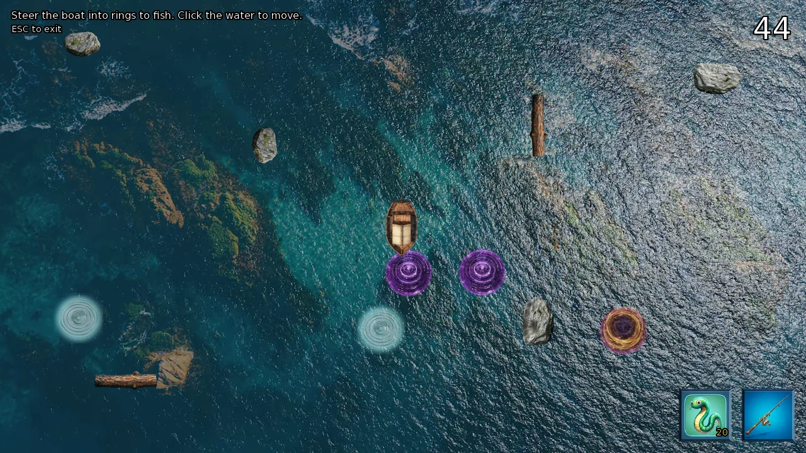
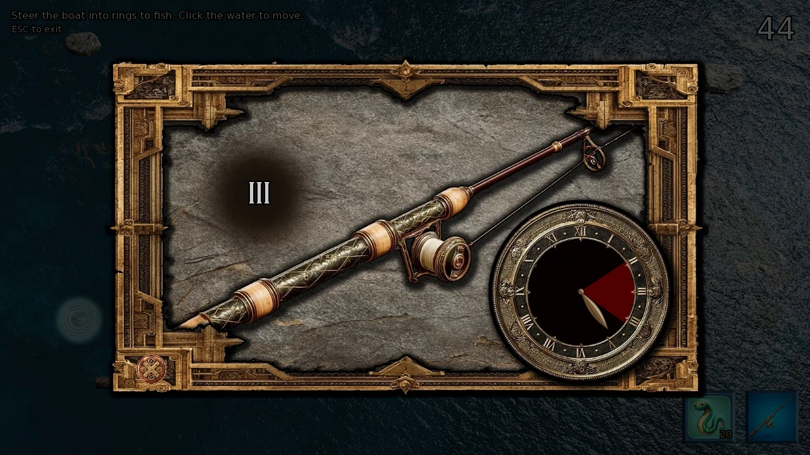
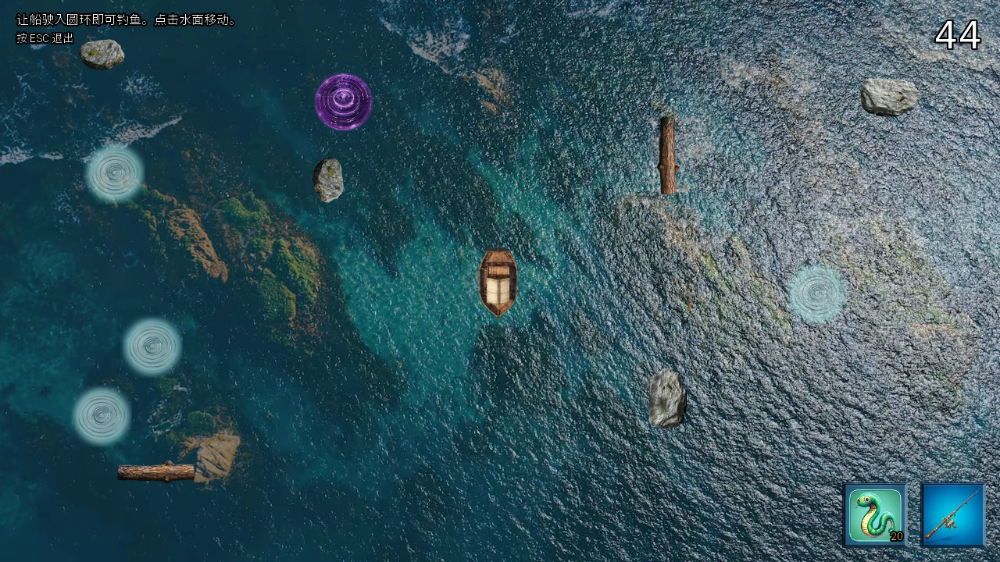
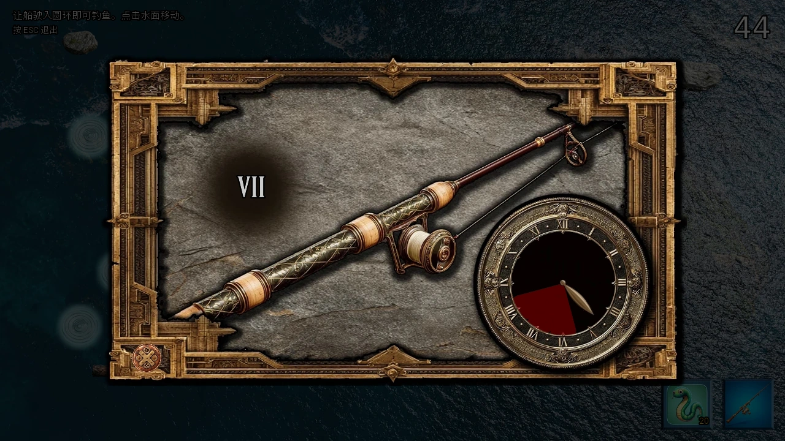

Select a screenshot to enlarge it. Screens show example inventories and progress.
A rod, a rental and a timing challenge
Fishing supplies Wealth, food, ingredients and Marina relationship progress. Start at Medieval → Village Outskirts → Fishing Village (Coast) → Fishing Hut. Buy a Wood Rod, then choose Rent Fishing Boat. Click the water to steer into rings; each ring opens a timing challenge. Successfully landed fish are processed when you return.
The rental costs 60 gold and 300 in-game minutes and adds 10 bait, up to 99. A rod is required, but you may rent with no bait in stock. The minigame has no separate Energy payment. Its 45–60 second active boat countdown is separate from the rental’s five-hour action cost.
Public service is open all day
The hut’s equipment, bait, rentals and ledger are available around the clock. Marina normally works 04:00–17:00; Tobbin covers nights and other absences, including vacations. He provides the same catch payout and still awards Marina relationship progress.
Marina’s personal lessons and fleet upgrades require her own presence. At Known+, she also visits the coast 18:00–20:00 on even days. If a personal action is missing at night, return during her hut duty.
Rods, bait and lessons
| Rod | Gold +materials | Minutes | Effect |
|---|---|---|---|
| Wood Rod | 100 +10 common | 10 | Basic reel |
| Iron Rod | 500 +10 rare | 20 | +5°arc,1 fewer hit,1 extra miss |
| Gold Rod | 1,000 +5 epic | 20 | +10°arc,2 fewer hits,2 extra misses |
Upgrades replace the previous rod; their bonuses do not add together. Buy Bait x 10 costs 20 gold and 10 minutes. Marina’s one-time Fishing Lesson, at Acknowledged+, costs 500 gold and 120 minutes and adds another 5° to the reel arc.
A random Old Fisherman encounter on normal Dungeon Floor 13 offers a permanent 15% slower spinner for 5 Dragon Coins, and Master Baiter for another 5. Master Baiter improves fish rarity and ring frequency. Reaching that floor does not guarantee meeting him.
Caterpillar Bait, at Marina Acknowledged+ with 1,000,000 combined living ecosystem members, is free and instant. It does not consume the population. Its unlimited bait and ring bonuses apply automatically after the scene; no bait-selection control is needed.
Steering, bait and the active timer
Click a reachable point in the water. The boat must come within 50 pixels of a ring; clicking the ring only sets a destination. Six rocks/logs obstruct movement. Prefer nearby epic rings over a distant target that will expire behind an obstacle.
The base outing has 45 seconds of active boat time; the first upgrade raises it to 60. Reeling pauses that countdown. Rings normally appear once per second and last 3 active seconds. Each reached ring consumes one bait even if you fail or close its reel. The outing ends after the final bait’s attempt.
Master Baiter shortens ring intervals by 0.20 sec; Caterpillar Bait by 0.20 sec; Sashimi’s Kiss by 0.15 sec. Caterpillar Bait shifts circle colors by−12 common/+4 rare/+8 epic percentage points. The Kiss shifts−9/+4/+5 and adds 0.5 sec lifetime. With all three: one ring every 0.45 sec,3.5 sec lifetime, and 39% common/38% rare/23% epic rings. The fish inside receives a separate roll.

Reeling at the highlighted clock position
The Roman numeral identifies the target clock position. Click as the rotating marker crosses its highlighted arc. Reach the required hits before exhausting the miss allowance. Failed reels give no fish and return to the boat if the outing can continue.
Gold Rod plus Marina’s lesson adds 15° arc, removes two required hits and adds two allowed misses versus Wood. At difficulty 10,20°/7 hits/1 miss becomes 35°/5 hits/3 misses. The fisherman’s lesson additionally slows the spinner 15%. Required hits never fall below one.
Base Wood Rod reel settings
| Difficulty | Speed | Full arc(°) | Hits | Miss limit |
|---|---|---|---|---|
| 1 | 16 | 105 | 3 | 5 |
| 2 | 17 | 100 | 3 | 5 |
| 3 | 18 | 85 | 4 | 5 |
| 4 | 19 | 75 | 4 | 4 |
| 5 | 20 | 65 | 5 | 4 |
| 6 | 22 | 55 | 5 | 3 |
| 7 | 24 | 45 | 6 | 3 |
| 8 | 26 | 35 | 6 | 2 |
| 9 | 28 | 25 | 7 | 2 |
| 10 | 30 | 20 | 7 | 1 |

Ring color is not fish rarity
A ring chooses a rarity table, then the fish tier is rolled. Eligible species of that tier are equally likely. A common ring can contain a rare fish; an epic ring does not guarantee an epic catch.
All fish-rarity tables
| Setup | Ring | Common% | Rare% | Epic% | Legendary% |
|---|---|---|---|---|---|
| Wood Rod | Common | 85 | 13 | 2 | 0 |
| Wood Rod | Rare | 35 | 55 | 9 | 1 |
| Wood Rod | Epic | 10 | 25 | 60 | 5 |
| Iron/Gold | Common | 70 | 25 | 5 | 0 |
| Iron/Gold | Rare | 20 | 60 | 18 | 2 |
| Iron/Gold | Epic | 5 | 15 | 70 | 10 |
| Master Baiter, any rod | Common | 60 | 30 | 8 | 2 |
| Master Baiter, any rod | Rare | 10 | 65 | 21 | 4 |
| Master Baiter, any rod | Epic | 0 | 15 | 70 | 15 |
Luck Potion rolls rarity twice and keeps the better tier, without awarding another fish or favoring a particular species. Master Baiter’s 15% legendary chance in an epic ring becomes 27.75%; reeling success is still required. Preferred hours in species descriptions do not restrict current catch selection. The Leviathan quest is the special species gate.
The 30-species catch reference
There are 11 common,9 rare,7 epic and 3 legendary fish. Base value is a minimum-size specimen’s gross value; maximum size is worth twice that amount. Ledger level is not always reel difficulty: Crystal Bass and Shadowfin use 9, Godly Goldfish and Chrono Carp 10.
Species, sizes, values and difficulties
| Fish | Rarity | Reel difficulty | Ledger level | Size(cm) | Base gold |
|---|---|---|---|---|---|
| Minnow | common | 1 | 1 | 5–12 | 2 |
| Bluegill | common | 2 | 2 | 15–25 | 3 |
| Perch | common | 2 | 2 | 18–30 | 5 |
| Sunfish | common | 2 | 2 | 12–20 | 4 |
| Chub | common | 2 | 2 | 20–35 | 6 |
| Carp | common | 3 | 3 | 25–50 | 7 |
| Catfish | common | 3 | 3 | 30–60 | 10 |
| Bass | common | 3 | 3 | 25–45 | 13 |
| Trout | common | 3 | 3 | 20–40 | 15 |
| Pike | common | 3 | 3 | 35–70 | 17 |
| Salmon | rare | 4 | 4 | 45–80 | 26 |
| Walleye | rare | 4 | 4 | 30–55 | 30 |
| Sturgeon | rare | 5 | 5 | 60–120 | 43 |
| Muskie | rare | 5 | 5 | 50–100 | 39 |
| Steelhead | rare | 5 | 5 | 40–75 | 35 |
| Tuna | rare | 6 | 6 | 80–150 | 52 |
| Marlin | rare | 6 | 6 | 100–200 | 65 |
| Swordfish | rare | 6 | 6 | 90–180 | 60 |
| Golden Trout | epic | 7 | 7 | 30–50 | 105 |
| Ancient Sturgeon | epic | 7 | 7 | 150–250 | 110 |
| Crystal Bass | epic | 9 | 8 | 40–70 | 85 |
| Rainbow Koi | epic | 8 | 8 | 35–60 | 95 |
| Shadowfin | epic | 9 | 8 | 45–80 | 130 |
| Godly Goldfish | legendary | 10 | 9 | 120–180 | 350 |
| Chrono Carp | legendary | 10 | 9 | 80–120 | 260 |
| Void Leviathan | legendary | 10 | 10 | 200–400 | 500 |
| Tadpole Fish | common | 1 | 1 | 3–8 | 1 |
| Moon Bass | rare | 4 | 4 | 35–60 | 28 |
| Prismatic Eel | epic | 7 | 7 | 50–90 | 108 |
| Ghost Shark | epic | 8 | 8 | 70–120 | 120 |
Processing pays about 60% of gross value
With at least one landed fish, processing pays gross value minus the processor’s 40% share, rounded in your favor. Gross value chooses the following tier; fish count and displayed weight do not. A zero-catch outing gives no processing rewards. A session containing the Void Leviathan adds 50 Marina points.
| Gross value | Food | Ingredients: common/rare/epic | Marina base points |
|---|---|---|---|
| <300 | 2 | 1 / 0 / 0 | 3 |
| 300–499 | 3 | 2 / 0 / 0 | 5 |
| 500–699 | 5 | 3 / 1 / 0 | 7 |
| 700–999 | 7 | 4 / 2 / 0 | 10 |
| 1,000–1,499 | 10 | 5 / 3 / 1 | 25 |
| 1,500–1,999 | 15 | 7 / 4 / 2 | 40 |
| 2,000+ | 20 | 10 / 5 / 3 | 100 |
Gross 1,200 pays 720 gold,10 food,5 common+3 rare+1 epic ingredients and 25 base points. After the 60 gold rental, cash profit is 660 before extra bait. The processing points do not use the ordinary Talk calculation.
View Fishing Ledger is free and instant. It records lifetime species counts, largest catches, total fish and gross value. “Total Gold Earned” is before the processing cut, rentals and equipment, so it is not wallet profit.
Three permanent fleet upgrades
Buy in order while Marina is present. Each costs 240 minutes; materials below are common/rare/epic. All three tiers give 60 active seconds.
| Action | Requirements | Gold +materials | Movement/turning speed |
|---|---|---|---|
| Upgrade Boats | Close Friend+,Technology 50 | 5,000 +60/20/5 | 1.25× |
| Enhance Boat Speed | Crush+,first tier,paid access | 15,000 +80/30/10 | 1.50× |
| Ultimate Speed Mastery | Romantic+,second tier,paid access | 50,000 +160/60/20 | 2.00× |
Each tier replaces the earlier speed, rather than multiplying all tiers together. It does not improve reel width or fish rarity. Upgrade scenes also advance Marina’s personal route.
Unlocking the special catch
Complete Marina’s The Impossible Catch H2H at Friend+, at the hut 10:00–14:00. Its base cost is 45 minutes and 5 Energy, restoring 5 Calm. A later Sashimi pool conversation is an alternate activation, not a requirement for Marina’s route.
Once active, the Void Leviathan is one of three equally likely legendary fish. In an epic ring with Master Baiter, its pre-reel chance is 5%, or 9.25% with Luck Potion. Win its difficulty 10 reel and finish processing; either Marina or Tobbin can register the catch. Marina’s The Impossible Wager separately needs Close Friend+, the catch and her own H2H completed.
Optional pool and island goals
Sashimi’s three random normal-floor 13 encounters grant the permanent Kiss blessing. Her later pool arrival needs all three encounters, the built Courtyard and Pool, and 25 successfully caught fish in one outing, not a lifetime total. Unlimited bait is useful because rental bait provides only ten attempts. A later island proposal opens Marina’s Boat to Sirena Isle purchase:1,000,000 gold,120 minutes and its required content access. These personal-route destinations are optional for ordinary fishing.
Exits and common blockers
Escape during boat navigation ends the outing but keeps landed fish for processing. Closing a reel abandons that attempt; closing the catch popup resumes navigation. Used bait and the rental payment are not refunded. Timer expiry or exhausted bait also returns you for processing. New outings reset the boat session, while rods, permanent upgrades and the ledger remain.
- No rental: enter the hut with a rod and 60 gold.
- No Marina upgrade: check her presence, relationship and the preceding tier.
- No Leviathan: activate its quest first; eligible attempts remain random.
- Rings vanish: the boat must reach them before they expire.
- Early finish: check bait as well as the active timer; unlimited bait removes only one limit.
See Marina, Tobbin, Sashimi, Caterpillar Rearing, Dungeon and Sirena Isle Resort.
钓竿、租船与收线挑战
钓鱼可获得财富、食物、食材与 Marina 的关系进度。路线为中世纪 → 村庄郊外 → 渔村（海岸）→ 钓鱼小屋。先买木钓竿，再选择「租钓鱼船」。点击水面驾驶，船只碰到水圈后进入收线挑战，成功捕到的鱼会在返回时处理。
租船需60金币、300游戏分钟，补充10鱼饵，库存最高99。需要钓竿，但原本没鱼饵也能租船。小游戏不另收精力，45–60秒的有效驾驶倒计时与五小时行动费用分别计算。
公共服务全天开放
小屋的装备、鱼饵、租船与账本全天可用。Marina 通常在04:00–17:00工作，夜间或她度假等缺席期间由 Tobbin 代班。他处理渔获的条件相同，关系奖励仍给 Marina。
Marina 的个人课程与船队升级仍需她本人在场。已知以上时，她还在偶数日18:00–20:00出现在海岸。夜间没有个人行动时，应在她的小屋值班时段回来。
钓竿、鱼饵与课程
| 钓竿 | 金币与材料 | 分钟 | 效果 |
|---|---|---|---|
| 木钓竿 | 100金币＋10普通材料 | 10 | 基础收线 |
| 铁钓竿 | 500金币＋10稀有材料 | 20 | 弧宽＋5°，少需1次命中，多容许1次失误 |
| 金钓竿 | 1,000金币＋5史诗材料 | 20 | 弧宽＋10°，少需2次命中，多容许2次失误 |
升级会替换旧竿，不把两档加成相加。购买鱼饵×10需20金币、10分钟。Marina 已遇见以上时，可花500金币、120分钟完成一次钓鱼课程，永久再增加5°判定弧宽。
普通地下城13层的老渔夫随机遭遇提供两项永久帮助：5龙币学会让旋转标记减速15%的课程，另5龙币学习钓饵大师，改善鱼的稀有度与水圈频率。抵达楼层不保证立即遇到。
Marina 已遇见以上、生态中有100万活体时，可免费、不耗时完成毛虫鱼饵，不会扣除种群。剧情结束后自动给予无限鱼饵与水圈加成，无须再找切换鱼饵的控件。
驾驶、鱼饵与有效倒计时
点击可到达的水面位置，船接近水圈50像素以内才会开始尝试，点击水圈只是设定目的地。六处岩石与木头会挡路，可优先追近处史诗圈，别把时间花在障碍后即将消失的目标。
基础为45秒有效驾驶时间，首次升级后60秒，收线期间暂停倒计时。水圈通常每秒出现一个，持续3秒。接触圈便用掉1鱼饵，收线失败或关闭也不返还，用完最后一饵的尝试后结束。
钓饵大师使出现间隔缩短0.20秒，毛虫鱼饵缩短0.20秒，Sashimi 之吻缩短0.15秒。毛虫鱼饵使圈色普通−12、稀有＋4、史诗＋8个百分点；吻之祝福则为−9、＋4、＋5，并延长0.5秒。三者齐全时，每0.45秒出现一圈，持续3.5秒，普通39%、稀有38%、史诗23%。圈里的鱼还会单独抽取。

在高亮钟面位置收线
罗马数字指明目标钟面位置，旋转标记经过高亮弧时点击。在失误次数耗尽前达到所需命中数即可。失败没有鱼，若本次出海还能继续便返回驾驶。
金钓竿加 Marina 课程，相比木竿增加15°弧宽、少需2次命中、多容许2次失误。难度10由20°／命中7次／失误上限1次变为35°／5次／3次，老渔夫课程还会减速15%，所需命中数最低为1。
木钓竿的基础收线条件
| 难度 | 速度 | 完整弧宽(°) | 需命中 | 失误上限 |
|---|---|---|---|---|
| 1 | 16 | 105 | 3 | 5 |
| 2 | 17 | 100 | 3 | 5 |
| 3 | 18 | 85 | 4 | 5 |
| 4 | 19 | 75 | 4 | 4 |
| 5 | 20 | 65 | 5 | 4 |
| 6 | 22 | 55 | 5 | 3 |
| 7 | 24 | 45 | 6 | 3 |
| 8 | 26 | 35 | 6 | 2 |
| 9 | 28 | 25 | 7 | 2 |
| 10 | 30 | 20 | 7 | 1 |

圈色不等于鱼的稀有度
圈色先选择概率表，再抽取鱼的档位，同档符合条件的鱼种等概率。普通圈可以出稀有鱼，史诗圈也不保证史诗渔获。
完整鱼种概率表
| 条件 | 圈色 | 普通% | 稀有% | 史诗% | 传说% |
|---|---|---|---|---|---|
| 木竿 | 普通 | 85 | 13 | 2 | 0 |
| 木竿 | 稀有 | 35 | 55 | 9 | 1 |
| 木竿 | 史诗 | 10 | 25 | 60 | 5 |
| 铁／金竿 | 普通 | 70 | 25 | 5 | 0 |
| 铁／金竿 | 稀有 | 20 | 60 | 18 | 2 |
| 铁／金竿 | 史诗 | 5 | 15 | 70 | 10 |
| 钓饵大师，任意竿 | 普通 | 60 | 30 | 8 | 2 |
| 钓饵大师，任意竿 | 稀有 | 10 | 65 | 21 | 4 |
| 钓饵大师，任意竿 | 史诗 | 0 | 15 | 70 | 15 |
幸运药水抽取两次稀有度，保留较高档，不额外发鱼，也不偏向某一鱼种。有钓饵大师的史诗圈，传说概率由15%升至27.75%，但仍需收线成功。鱼种描述里的偏好时段不会限制实际抽取，特殊鱼种门槛是利维坦任务。
30种渔获参考
共普通11种、稀有9种、史诗7种、传说3种。基础价值为最小尺寸的毛价值，最大尺寸为两倍。账本等级不一定等于收线难度：水晶鲈鱼和影鳍鱼为9，神圣金鱼和时序鲤鱼为10。
鱼种、尺寸、价值与难度
| 鱼种 | 稀有度 | 收线难度 | 账本等级 | 尺寸(厘米) | 基础金币 |
|---|---|---|---|---|---|
| 米诺鱼 | 普通 | 1 | 1 | 5–12 | 2 |
| 蓝鳃太阳鱼 | 普通 | 2 | 2 | 15–25 | 3 |
| 河鲈 | 普通 | 2 | 2 | 18–30 | 5 |
| 太阳鱼 | 普通 | 2 | 2 | 12–20 | 4 |
| 雅罗鱼 | 普通 | 2 | 2 | 20–35 | 6 |
| 鲤鱼 | 普通 | 3 | 3 | 25–50 | 7 |
| 鲶鱼 | 普通 | 3 | 3 | 30–60 | 10 |
| 鲈鱼 | 普通 | 3 | 3 | 25–45 | 13 |
| 鳟鱼 | 普通 | 3 | 3 | 20–40 | 15 |
| 狗鱼 | 普通 | 3 | 3 | 35–70 | 17 |
| 鲑鱼 | 稀有 | 4 | 4 | 45–80 | 26 |
| 玻璃梭鲈 | 稀有 | 4 | 4 | 30–55 | 30 |
| 鲟鱼 | 稀有 | 5 | 5 | 60–120 | 43 |
| 麝香狗鱼 | 稀有 | 5 | 5 | 50–100 | 39 |
| 钢头鳟 | 稀有 | 5 | 5 | 40–75 | 35 |
| 金枪鱼 | 稀有 | 6 | 6 | 80–150 | 52 |
| 马林鱼 | 稀有 | 6 | 6 | 100–200 | 65 |
| 剑鱼 | 稀有 | 6 | 6 | 90–180 | 60 |
| 黄金鳟鱼 | 史诗 | 7 | 7 | 30–50 | 105 |
| 远古鲟鱼 | 史诗 | 7 | 7 | 150–250 | 110 |
| 水晶鲈鱼 | 史诗 | 9 | 8 | 40–70 | 85 |
| 彩虹锦鲤 | 史诗 | 8 | 8 | 35–60 | 95 |
| 影鳍鱼 | 史诗 | 9 | 8 | 45–80 | 130 |
| 神圣金鱼 | 传说 | 10 | 9 | 120–180 | 350 |
| 时序鲤鱼 | 传说 | 10 | 9 | 80–120 | 260 |
| 虚空利维坦 | 传说 | 10 | 10 | 200–400 | 500 |
| 蝌蚪鱼 | 普通 | 1 | 1 | 3–8 | 1 |
| 月光鲈鱼 | 稀有 | 4 | 4 | 35–60 | 28 |
| 棱彩鳗鱼 | 史诗 | 7 | 7 | 50–90 | 108 |
| 幽灵鲨 | 史诗 | 8 | 8 | 70–120 | 120 |
处理后约得毛价值的60%
至少成功捕获一条后，会按毛价值扣除处理方40%分成，零头向你有利的方向取整。档位看毛价值，不看鱼的数量或显示重量；空手没有处理奖励。本次包含虚空利维坦时，再加50点 Marina 奖励。
| 毛价值 | 食物 | 食材：普通／稀有／史诗 | Marina基础点数 |
|---|---|---|---|
| <300 | 2 | 1 / 0 / 0 | 3 |
| 300–499 | 3 | 2 / 0 / 0 | 5 |
| 500–699 | 5 | 3 / 1 / 0 | 7 |
| 700–999 | 7 | 4 / 2 / 0 | 10 |
| 1,000–1,499 | 10 | 5 / 3 / 1 | 25 |
| 1,500–1,999 | 15 | 7 / 4 / 2 | 40 |
| 2,000+ | 20 | 10 / 5 / 3 | 100 |
毛价值1,200时，得到720金币、10食物、5普通＋3稀有＋1史诗食材与25点基础奖励；扣60金币租金后净赚660，另购鱼饵则再扣。处理点数不走普通交谈计算。
「查看钓鱼账本」免费、不耗时，记录各鱼种累计、最大尺寸、总鱼数与毛价值。「总赚取金币」尚未扣处理分成、租金及装备，不是钱包净利润。
三次永久船队升级
Marina 在场时依序购买，每次240分钟。材料按普通／稀有／史诗列出，三档都给予60秒有效驾驶时间。
| 行动 | 条件 | 金币＋材料 | 移动与转向速度 |
|---|---|---|---|
| 升级船只 | 亲密朋友以上，科技50 | 5,000＋60／20／5 | 1.25倍 |
| 提升船速 | 迷恋以上，第一档完成，付费权限 | 15,000＋80／30／10 | 1.50倍 |
| 终极速度精通 | 浪漫感以上，第二档完成，付费权限 | 50,000＋160／60／20 | 2倍 |
新档替换旧速度，不将三个倍率相乘，也不改变收线弧宽或鱼种稀有度。升级剧情还会推进 Marina 的个人路线。
开启特殊渔获
在小屋10:00–14:00、Marina 朋友以上时，完成「不可能的渔获」谈心，基础45分钟、消耗5精力、恢复5镇定。较后的 Sashimi 泳池对话也可开启任务，但不必先走那条路线。
开启后，虚空利维坦成为三种等概率传说鱼之一。史诗圈加钓饵大师时，收线前概率为5%，再有幸运药水则为9.25%。赢下难度10收线并完成处理，Marina 或 Tobbin 都能记录捕获。Marina 的「不可能的赌约」还单独要求亲密朋友以上、捕获记录与她本人的谈心完成。
可选的泳池与岛屿目标
Sashimi 在普通13层的三次随机遭遇可给予永久的吻之祝福。较后的泳池到访还要完成全部遭遇、建好庭院与泳池，并在一次出海成功捕获25条，不是累计25条。租船只给十次尝试的鱼饵，因此无限鱼饵很实用。后续岛屿提议开放 Marina 的前往 塞壬岛 船只购买，需1,000,000金币、120分钟与对应内容权限。这些个人路线目的地不是普通钓鱼必需。
退出与常见阻挡
驾驶时按Escape会结束出海，已捕到的鱼仍会处理。关闭收线则放弃当前尝试，关闭捕获弹窗则继续驾驶。已用鱼饵与租金不退还，计时或鱼饵耗尽也会返回处理。新出海会重新开始船盘，钓竿、永久升级与账本保留。
- 没有租船：带着钓竿与60金币进入小屋。
- 没有 Marina 升级：检查她是否在场、关系与上一档是否完成。
- 没有利维坦：先开任务，符合条件后仍是随机。
- 水圈消失：船要在圈消失前真正到达。
- 很快结束：同时检查鱼饵与有效计时，无限鱼饵只移除其中一个限制。
Adapted and updated from the community Chronoromancer Wiki. Community source and history · CC BY-SA 4.0. Game images © Chronoromancer Studio.